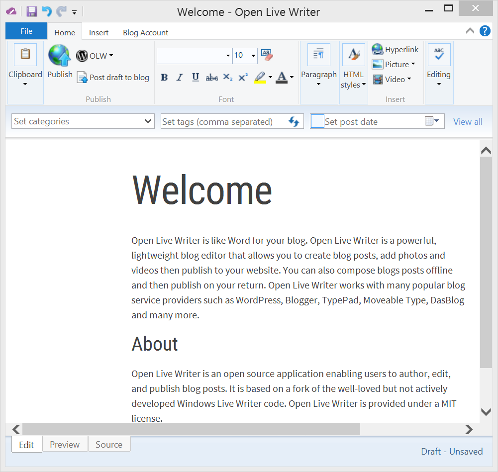

Open Live Writer is like Word for your blog. Open Live Writer is a powerful, lightweight blog editor that allows you to create blog posts, add photos and videos then publish to your website. You can also compose blogs posts offline and then publish on your return. Open Live Writer works with many popular blog service providers such as WordPress, Blogger, TypePad, Moveable Type, DasBlog and many more.

Open Live Writer is an open source application enabling users to author, edit, and publish blog posts. It is based on a fork of the well-loved but not actively developed Windows Live Writer code. Open Live Writer is provided under a MIT license.
If you're interested in getting occasional notices of updates to Open Live Writer and hearing about opportunities to try new features, you can subscribe to our Announcements email list. You can also follow @OpenLiveWriter on Twitter and like the page for Open Live Writer on Facebook.
User Support is available at Open Live Writer Help which is a Google Group.
If you're interested in getting involved in any of the below ways, please subscribe to our mail list.
Below are some of the people who have helped to bring you Open Live Writer.
Having trouble with Open Live Writer? Notice a bug? Check-out frequently asked questions (FAQ) and if you don't see your issue resolved, please open an issue in GitHub.